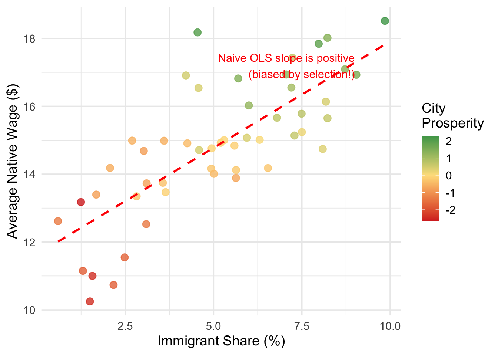
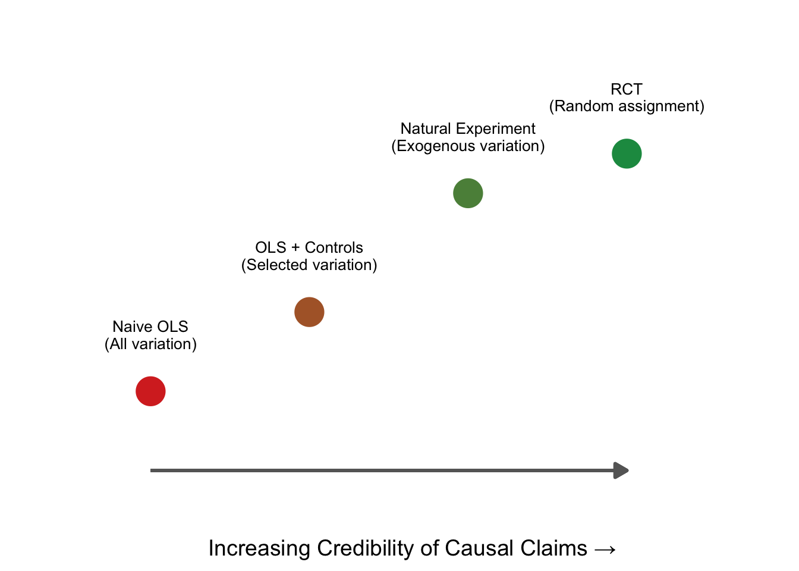
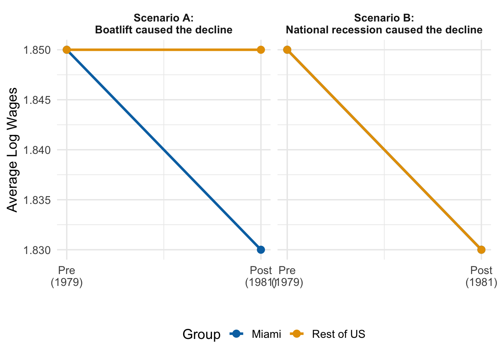
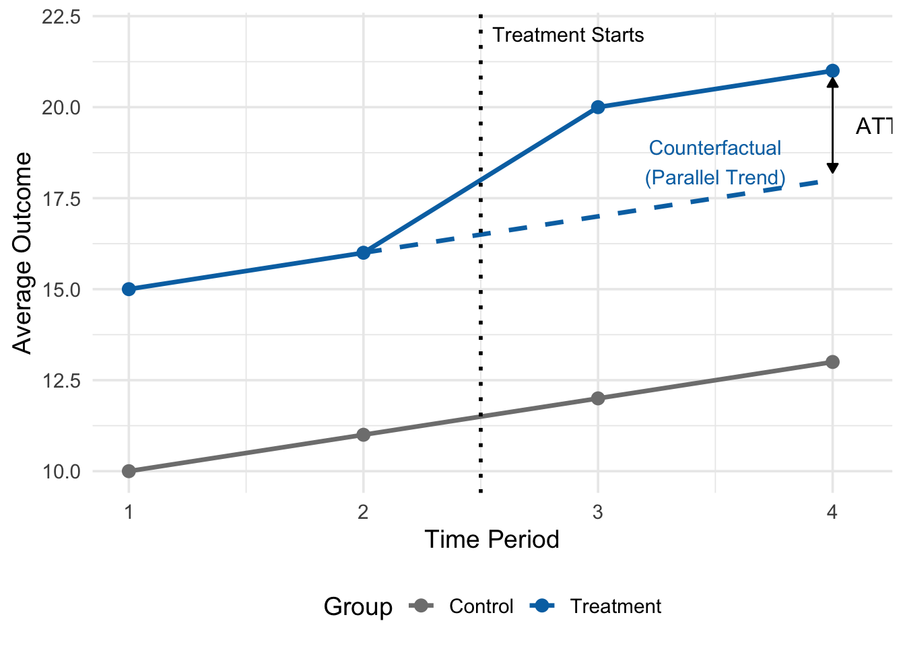
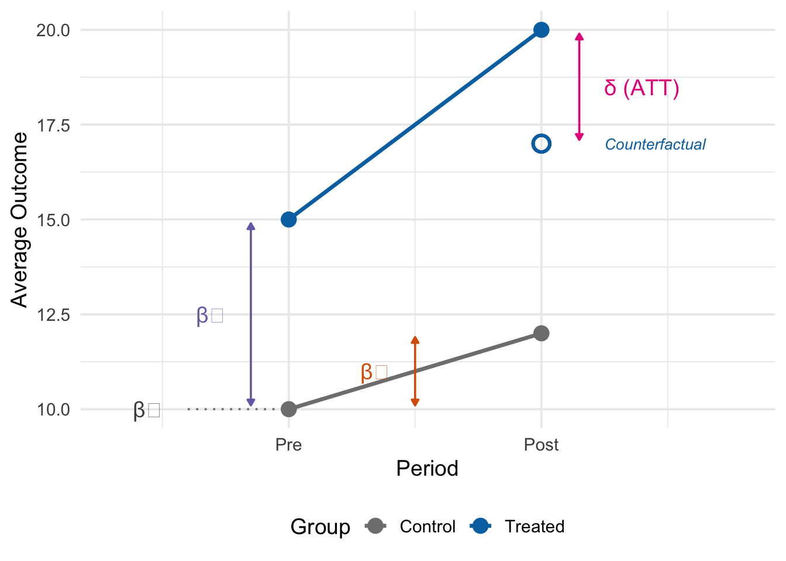
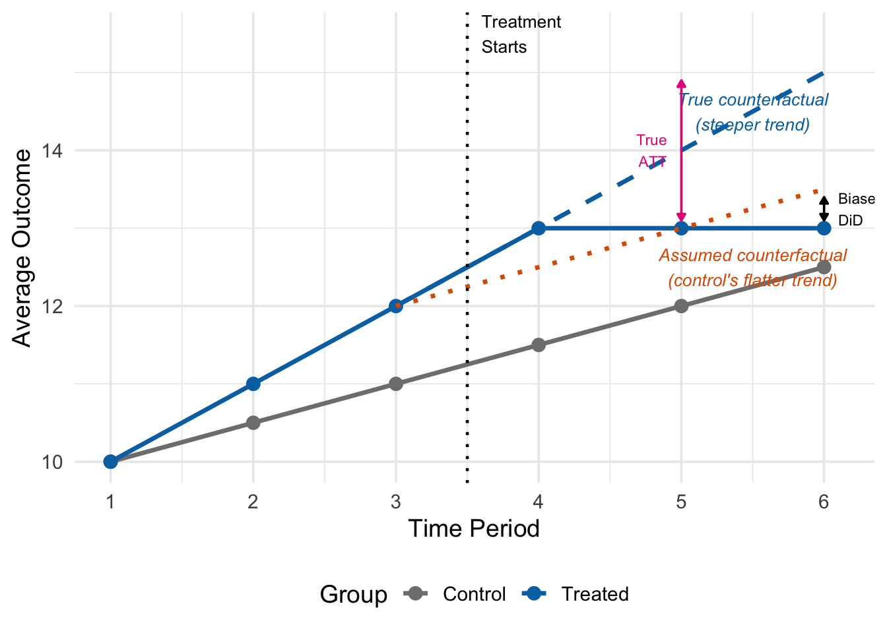
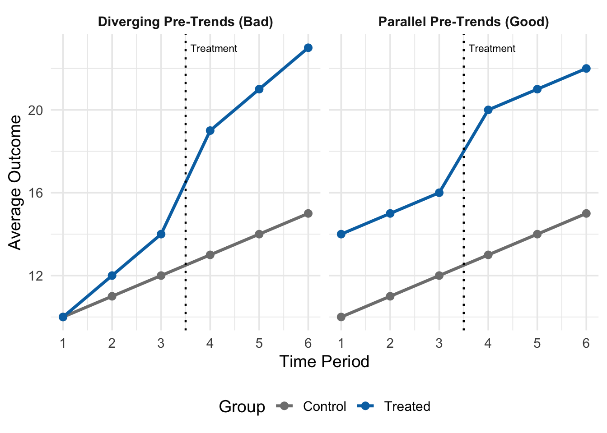

12 Difference-in-Differences
TipKey Questions
- What is a natural experiment and how does it help with causal inference?
- Why can’t we just use any source of variation to estimate causal effects?
- What is the parallel trends assumption and why is it crucial for DiD?
- How do we estimate the average treatment effect on the treated (ATT) using DiD?
- What is two-way fixed effects and how does it relate to DiD?
- How do we choose good control units for a DiD design?
NoteSuggested Readings
- TBD
Over the past several chapters we have built up an increasingly useful set of tools for causal inference. We started with randomized controlled trials (RCTs)—the gold standard—where random assignment eliminates selection bias. But RCTs are often infeasible, so we turned to multivariate OLS, controlling for observable confounders to reduce omitted variable bias. When that was not enough, we introduced panel data with fixed effects, which control for unobserved time-invariant factors (like innate ability or geography) without directly measuring them.
Each step has been an improvement, but each still has limits. OLS only controls for variables we can observe and include. Fixed effects handle time-invariant unobservables, but cannot address factors that change differently across units over time. What if even fixed effects leave us with confounders we cannot account for?
This chapter introduces difference-in-differences (DiD), a method that takes a different approach. Rather than relying on control variables to isolate causal effects, DiD relies on control units—a comparison group that approximates what would have happened to the treated group absent treatment. This shift from controlling for variables to finding appropriate comparison groups is at the heart of modern applied economics.
12.1 From Control Variables to Control Units
12.1.1 The Limits of Regression-Based Approaches
To see why we need a new approach, consider the challenge of estimating the effect of immigration on native workers’ wages. A naive approach might simply regress wages on a measure of immigrant share across cities:
\[ native\_wage_i = \beta_0 + \beta_1(immigrant\_share_i) + \mu_i \]
The problem with this regression is obvious once you think about it. Immigrants tend to move to cities that are already economically prosperous—places with strong job markets, growing industries, and rising wages. This means \(immigrant\_share\) is positively correlated with the error term \(\mu\) (which contains economic vitality, industry composition, and many other wage determinants), creating classic omitted variable bias. We might find a positive correlation between immigration and wages, but this would reflect the fact that immigrants choose thriving cities, not that immigration causes higher wages.
We could try to fix this with control variables—perhaps adding measures of industry composition, city population, or education levels. But there will always be important unobservable factors we cannot include. What is the economic trajectory of a city? How attractive is it to both immigrants and high-wage employers? These factors are difficult or impossible to measure, yet they drive both immigration patterns and wages.
Figure 12.1 illustrates this problem with simulated data. In this simulation, immigration has zero true causal effect on wages, but the naive OLS regression line slopes upward because more prosperous cities (shown in green) attract both more immigrants and have higher wages. The OLS estimate is picking up the selection of immigrants into better cities, not any actual effect of immigration.
Even if we added control variables for education levels, industry mix, and population size, we would still miss the unobservable components of city prosperity. And while fixed effects could help if we had panel data—absorbing time-invariant city characteristics—they still cannot handle factors that change differently across cities over time (e.g., one city’s tech boom attracting both immigrants and driving up wages simultaneously).
12.1.2 Why Not All Variation is Useful
This brings us to a point that is easy to overlook: not all variation in a treatment variable is good for estimating causal effects.
When we run a regression of wages on immigrant share, the variation in immigrant share across cities comes from many sources: immigrants choosing prosperous cities, historical migration networks, geographic proximity to sending countries, local immigration policies, and random chance. Most of these sources are endogenous—they are correlated with the very factors that also affect wages. Using this variation to estimate causal effects is no better than the naive comparison we started with.
This is where regression-based approaches hit a wall. No matter how many control variables or fixed effects we include, if the remaining variation in our treatment variable is driven by endogenous factors, our estimates will be biased. What we need is variation in treatment that is exogenous—driven by factors unrelated to the outcome.
WarningNot All Variation is Created Equal
The key challenge in causal inference is not just whether treatment varies across units, but why it varies. If the variation in treatment is driven by the same factors that affect the outcome (endogenous variation), regression estimates will be biased regardless of how many controls we include. We need variation that is driven by factors unrelated to the outcome (exogenous variation).
12.2 Natural Experiments
12.2.1 The Logic of Experiments, Revisited
Recall why randomization works so well in an RCT: when units are randomly assigned to treatment and control groups, there can be no systematic differences between the groups—in either observable or unobservable characteristics. Random assignment eliminates the selection bias term, so any difference in outcomes between the groups reflects the causal effect of treatment.
The problem is that we usually cannot randomly assign the treatments we care about in economics. We cannot randomly assign immigration levels to cities, or minimum wage increases to states, or health insurance to families. The variation in these treatments is driven by economic, political, and social forces that are themselves correlated with outcomes.
12.2.2 Natural Experiments
But sometimes nature, a policy change, or a historical accident generates variation in treatment that is as good as random. If the reason some units are treated and others are not has nothing to do with the factors that affect our outcome, then we are in essentially the same situation as an RCT, even though no one actually randomized anything.
NoteNatural Experiments
A natural experiment is a study based on observational data where “treatment” is assigned by forces outside the researcher’s control—such as policy changes, geographic boundaries, or historical events—in a way that resembles random assignment. The key requirement is that the source of variation in treatment is unrelated to the factors that determine outcomes, making the treatment assignment “as good as random.”
This is a high bar. It is not enough to find variation in a treatment variable. The variation must come from a source that is plausibly exogenous—unrelated to the outcome except through its effect on treatment. A natural experiment gives us a specific, identifiable reason why some units received treatment and others did not, where that reason has nothing to do with the outcome.
12.2.3 Where Natural Experiments Fit
Think of natural experiments as sitting on a spectrum between observational studies and RCTs:

Naive OLS uses all the variation in treatment—endogenous and exogenous alike—and is susceptible to bias. OLS with controls tries to strip out some of the endogenous variation, but can only control for observables. An RCT generates purely exogenous variation through randomization. A natural experiment falls close to the RCT end: it identifies a specific, external source of variation that is plausibly unrelated to the outcome.
What separates a natural experiment from “controlling for things” is that a natural experiment tells a specific story about why treatment varies. It is not enough to say “I controlled for everything I could think of.” You need to say: “Here is a specific event or policy that determined who was treated and who was not, and here is why that assignment is unrelated to outcomes.”
12.3 The Mariel Boatlift: A Classic Natural Experiment
One of the most famous natural experiments in economics involves the Mariel Boatlift. In 1980, Cuba experienced severe economic turmoil, and Fidel Castro announced that anyone who wished to leave could do so. Between April and October, approximately 125,000 Cubans departed from Mariel Harbor and arrived in Miami, increasing Miami’s labor force by roughly 7% almost overnight.
Why is this a natural experiment? Because the reason Miami received this influx of immigrants had nothing to do with Miami’s labor market conditions. The boatlift was driven by two factors: political upheaval in Cuba and Miami’s geographic proximity to Cuba. Miami didn’t receive these immigrants because its economy was doing well or poorly, or because its wages were high or low. It received them because it was the closest major American city to Cuba.
The “treatment”—a sudden, large increase in labor supply—was as good as randomly assigned to Miami. The immigrants didn’t choose Miami because of its wage levels, and Miami didn’t recruit them because it needed workers.
David Card’s 1990 study used this natural experiment to estimate the effect of immigration on native wages. But having exogenous variation alone is not enough. We still need a method to extract the causal effect from the data. The natural experiment tells us who was treated and why the treatment is plausibly exogenous. The question is: how do we turn that into a number? Specifically, how do we separate the effect of the boatlift from all the other things that were changing in Miami at the same time?
12.4 The Difference-in-Differences Approach
12.4.1 Why Simple Before-After Comparisons Fail
A first pass might be to compare wages in Miami before the boatlift to wages after:
| City | Pre (1979) | Post (1980-1985) | Difference |
|---|---|---|---|
| Miami | 1.85 | 1.83 | -0.02 |
Wages fell by $0.02 (in log terms). Can we interpret this as the causal effect of immigration?
No. The problem is that many things changed between 1979 and the early 1980s besides the Mariel Boatlift. The United States experienced a significant recession in the early 1980s. Interest rates rose sharply. Oil prices fluctuated. All of these macroeconomic forces would have affected wages in Miami regardless of whether the boatlift occurred.
Looking only at changes in our treated unit (Miami) may mislead us into thinking that those changes were caused by our treatment (the boatlift), when in reality they reflect broader trends affecting the entire economy. A simple before-after comparison confounds the treatment effect with these common time trends.

Figure 12.3 illustrates why this is a problem. In Scenario A, Miami’s wages fell while the rest of the country’s wages stayed flat—suggesting the boatlift really did depress wages. In Scenario B, Miami’s wages fell, but so did everyone else’s—suggesting the decline had nothing to do with the boatlift and everything to do with a national recession. From Miami’s data alone, both scenarios look identical. We need a comparison group to tell them apart.
12.4.2 The Need for Control Units
To isolate the causal effect of the boatlift, we need to know what would have happened to Miami’s wages if the boatlift had never occurred—the counterfactual.
NoteCounterfactuals
A counterfactual is a “what if” scenario used to measure the causal impact of a policy, event, or decision. It compares the actual outcome (what really happened) to a hypothetical outcome (what would have happened without the event). This hypothetical, “do-nothing” scenario is the counterfactual. In Card’s study, the counterfactual is: what would Miami’s wages have looked like if the boatlift had never occurred?
We cannot observe the counterfactual directly—there is no parallel universe where Cuba kept its borders closed. But we can approximate it by finding control units: cities similar to Miami that were not affected by the boatlift. If we pick good controls, their wage trajectory should tell us roughly what Miami’s wages would have done absent the boatlift.
Card chose Atlanta, Los Angeles, Houston, and Tampa-St. Petersburg as control cities. He argued these cities shared important characteristics with Miami: they had relatively large populations of Blacks and Hispanics, and they exhibited patterns of economic growth similar to Miami’s in the late 1970s and early 1980s.
Now we can compare the change in Miami to the change in these controls:
| City | Pre (1979) | Post (1980-1985) | Difference |
|---|---|---|---|
| Miami | 1.85 | 1.83 | -0.02 |
| Controls | 1.93 | 1.91 | -0.02 |
| Treated - Control | 0.00 |
The control cities experienced the exact same wage decline as Miami. This tells us something important: the $0.02 decline in Miami was not caused by the boatlift—it was part of a broader economic trend affecting all similar cities. The boatlift’s causal effect, isolated by subtracting the control group’s change from Miami’s change, is essentially zero.
The difference-in-differences estimate is: \[ \underbrace{(-0.02)}_{\text{Miami's change}} - \underbrace{(-0.02)}_{\text{Controls' change}} = 0.00 \]
Card concluded that the Mariel Boatlift had no meaningful effect on native wages—a result that challenged the common intuition that large immigration inflows depress wages.
Note an important subtlety here: the two groups do not need to have the same level of wages—Miami’s wages are consistently lower than the controls’. What matters for DiD is that both groups move in the same direction by roughly the same amount over time. This is the parallel trends assumption, which we will formalize shortly.
12.5 Formalizing the Treatment Effect
12.5.1 The Potential Outcomes Framework, Again
We first encountered the potential outcomes framework back in our discussion of RCTs and causality. The same framework applies here, and seeing where DiD fits into it will clarify both what we are estimating and what assumptions we need.
Recall that every unit \(i\) has two potential outcomes: a treated outcome \(Y_i(1)\)—what happens if the unit receives treatment—and an untreated outcome \(Y_i(0)\)—what happens if it does not. The causal effect for unit \(i\) is the difference: \(Y_i(1) - Y_i(0)\). We can never observe both for the same unit (the fundamental problem of causal inference), so we need some strategy to estimate average causal effects.
In the RCT chapter, random assignment solved this problem by making the treatment and control groups comparable in expectation. Because assignment was random, the control group’s average outcome was a valid stand-in for what the treatment group would have experienced without treatment. This eliminated the selection bias term:
\[ \underbrace{E[Y_i(1) \mid D_i = 1] - E[Y_i(0) \mid D_i = 0]}_{\text{observed difference}} = \underbrace{ATT}_{\text{causal effect}} + \underbrace{E[Y_i(0) \mid D_i = 1] - E[Y_i(0) \mid D_i = 0]}_{\text{selection bias} = 0 \text{ under randomization}} \]
With random assignment, the selection bias term is zero because treated and control units are drawn from the same population.
DiD faces the same problem, but in a panel data setting. We have treated and control units observed before and after treatment. The question is the same: how do we ensure that comparing these groups gives us a causal effect rather than a causal effect plus selection bias?
12.5.2 The Average Treatment Effect on the Treated
In the DiD setting, our target is the Average Treatment Effect on the Treated (ATT): the average causal effect specifically for those units that were actually treated, measured in the post-treatment period.
\[ ATT = E[Y_{i,1}(1) \mid D_i = 1] - E[Y_{i,1}(0) \mid D_i = 1] \tag{12.1}\]
where:
- \(Y_{i,1}(1)\) is the treated potential outcome for unit \(i\) in the post-period
- \(Y_{i,1}(0)\) is the untreated potential outcome for unit \(i\) in the post-period
- \(D_i = 1\) indicates that unit \(i\) is in the treated group
The ATT asks: how do the treated group’s actual post-treatment outcomes compare to what they would have experienced without treatment? In Card’s study, this is the difference between Miami’s actual wages after 1980 and “parallel universe” Miami where the boatlift never happened.
12.5.3 The Fundamental Problem (Again)
We can observe the first term, \(E[Y_{i,1}(1) \mid D_i = 1]\). It is just the average post-treatment outcome for the treated group—Miami’s wages after 1980.
But the second term, \(E[Y_{i,1}(0) \mid D_i = 1]\), is unobservable. We cannot rewind time and re-run history without the boatlift.
In an RCT, we solved this by using the control group’s outcome as a stand-in, and random assignment guaranteed this was valid. But DiD is not an RCT. Even with a natural experiment giving us “as good as random” treatment assignment, treated and control units may have different levels of the outcome (Miami had lower wages than the control cities even before the boatlift). So we cannot simply substitute the control group’s post-treatment level for the treated group’s counterfactual.
What DiD does instead is more subtle: rather than using the control group’s level, it uses the control group’s change over time to approximate what the treated group’s change would have been. The assumption that makes this work is parallel trends.
12.6 The Parallel Trends Assumption
12.6.1 The Core Identifying Assumption
The DiD approach rests on one critical, non-provable assumption:
ImportantParallel Trends Assumption
In the absence of treatment, the average outcome for the treated group would have followed the same trend as the average outcome for the control group: \[ E[Y_{i,1}(0) - Y_{i,0}(0) \mid D_i = 1] = E[Y_{i,1}(0) - Y_{i,0}(0) \mid D_i = 0] \]
The left-hand side is the unobservable trend the treated group would have experienced without treatment—the counterfactual trend we need but cannot see. The right-hand side is the observable trend of the control group, which we can compute from the data.
If treatment had never occurred, the treated group’s outcomes would have changed by the same amount as the control group’s. This lets us replace the unobservable counterfactual with the control group’s actual change over time.
Notice what this assumption does not require:
- It does not require that treated and control groups have the same level of the outcome. Miami can have lower wages than the control cities—what matters is that the changes would have been the same.
- It does not require that treatment is randomly assigned in the traditional sense. It only requires that the trends would have been parallel absent treatment.
But it does require that the control group is on the same trajectory that the treated group would have been on absent treatment. If the control group was trending differently—for reasons unrelated to treatment—then the DiD estimate will be biased. This is why the choice of control units is so important, and why we spend considerable time on research design later in this chapter.
12.6.2 From Parallel Trends to the DiD Estimator
We can now derive the DiD estimator. We want to estimate the ATT from Equation 12.1, but we cannot observe \(E[Y_{i,1}(0) \mid D_i = 1]\)—the counterfactual.
The parallel trends assumption gives us a way to express this unobservable term. If the trends would have been the same:
\[ E[Y_{i,1}(0) \mid D_i = 1] = E[Y_{i,0}(0) \mid D_i = 1] + \underbrace{(E[Y_{i,1}(0) \mid D_i = 0] - E[Y_{i,0}(0) \mid D_i = 0])}_{\text{control group's observed change}} \]
That is, the treated group’s counterfactual post-treatment level equals their pre-treatment level plus the control group’s change. Substituting this into the ATT formula and simplifying, we get the DiD estimator:
\[ \begin{aligned} \underbrace{ATT}_{\text{treatment effect}} &= \underbrace{\left(E[Y_{i,1} \mid D_i = 1] - E[Y_{i,0} \mid D_i = 1]\right)}_{\text{change for treated group}} \\ &\quad - \underbrace{\left(E[Y_{i,1} \mid D_i = 0] - E[Y_{i,0} \mid D_i = 0]\right)}_{\text{change for control group}} \end{aligned} \tag{12.2}\]
This is the difference-in-differences: the first difference is the change over time for the treated group, the second difference is the change over time for the control group, and we take the difference between these two differences. The control group’s change “nets out” any common trends that would have occurred even without treatment, leaving only the causal effect of the treatment on the treated group.
12.6.3 Visualizing DiD
The logic of DiD is best understood graphically. Figure 12.4 shows a stylized example with treatment beginning between periods 2 and 3:

In Figure 12.4, the solid lines show the actual observed outcomes for both groups. Before treatment (periods 1 and 2), both groups trend upward at the same rate—they follow parallel trends. The treated group starts higher, but both increase by 1 unit per period.
After treatment (periods 3 and 4), the control group continues its same upward trend (from 11 to 12 to 13). The dashed line shows where the treated group would have been if it had continued along this same trend (from 16 to 17 to 18). But the treated group’s actual outcome jumps to 20 and 21—well above the counterfactual.
The ATT is the vertical gap between the observed treatment outcome and the dashed counterfactual line. In this example, \(ATT = 21 - 18 = 3\) (or equivalently, \(20 - 17 = 3\)). This is what DiD is estimating: the treatment effect is not the raw difference in levels between the two groups (which also reflects pre-existing differences), but rather the additional change the treated group experienced beyond what the control group experienced.
12.7 The DiD Regression
12.7.1 Setting Up the Model
We usually estimate the DiD effect using regression rather than manual calculations. Regression gives us standard errors, lets us add control variables if desired, and extends naturally to more complex settings.
For the simple 2x2 case (two groups, two time periods), the DiD regression is:
\[ y_{it} = \beta_0 + \beta_1 D_i + \beta_2 P_t + \delta(D_i \times P_t) + \mu_{it} \tag{12.3}\]
where:
- \(y_{it}\) is the outcome for unit \(i\) at time \(t\)
- \(D_i\) is the treatment group indicator: a dummy variable equal to 1 if unit \(i\) is in the treated group, and 0 if in the control group
- \(P_t\) is the post-period indicator: a dummy variable equal to 1 in the post-treatment period, and 0 in the pre-treatment period
- \(D_i \times P_t\) is the interaction term: equal to 1 only for treated units in the post-treatment period
- \(\delta\) is the DiD estimate—our estimate of the ATT
Each component of this regression has a specific interpretation: \(\beta_0\) captures the baseline level (control group in the pre-period), \(\beta_1\) captures the pre-existing level difference between treated and control groups, \(\beta_2\) captures the common time trend (the change both groups would have experienced), and \(\delta\) captures the additional change experienced by the treated group beyond the common trend.
12.7.2 How the Regression Recovers the DiD Effect
To see exactly why \(\delta\) captures the DiD effect, consider the predicted outcome \(\hat{y}_{it}\) for each of the four group-period combinations. We simply plug in the appropriate values of \(D_i\) and \(P_t\):
| Group (\(D_i\)) | Period (\(P_t\)) | Predicted Outcome (\(\hat{y}_{it}\)) |
|---|---|---|
| Control (\(D_i = 0\)) | Pre (\(P_t = 0\)) | \(\beta_0\) |
| Control (\(D_i = 0\)) | Post (\(P_t = 1\)) | \(\beta_0 + \beta_2\) |
| Treated (\(D_i = 1\)) | Pre (\(P_t = 0\)) | \(\beta_0 + \beta_1\) |
| Treated (\(D_i = 1\)) | Post (\(P_t = 1\)) | \(\beta_0 + \beta_1 + \beta_2 + \delta\) |
Now we can verify that \(\delta\) equals the DiD estimator from Equation 12.2 by computing the two “differences”:
Change for the treated group (post minus pre): \[ (\beta_0 + \beta_1 + \beta_2 + \delta) - (\beta_0 + \beta_1) = \beta_2 + \delta \]
Change for the control group (post minus pre): \[ (\beta_0 + \beta_2) - \beta_0 = \beta_2 \]
DiD estimate (treated change minus control change): \[ (\beta_2 + \delta) - \beta_2 = \delta \]
The \(\beta_2\) terms—representing the common time trend—cancel out, leaving only \(\delta\): the additional change experienced by the treated group beyond the common trend. This is the coefficient on the interaction term \(D_i \times P_t\) in our regression, and it is exactly the difference-in-differences!

12.7.3 Example: Estimating the Mariel Boatlift Effect
We can re-estimate Card’s (1990) results using the DiD regression. First, we create the dataset with the appropriate indicator variables:
# Create the Card (1990) data
miami_wages <- tibble(
city = "miami",
year = 1979:1985,
wages = c(1.85, 1.83, 1.85, 1.82, 1.82, 1.82, 1.82)
)
control_wages <- tibble(
city = "control",
year = 1979:1985,
wages = c(1.93, 1.90, 1.91, 1.91, 1.90, 1.91, 1.92)
)
boatlift_data <- bind_rows(miami_wages, control_wages) |>
mutate(
post = ifelse(year >= 1980, 1, 0),
treated = ifelse(city == "miami", 1, 0),
post_treat = post * treated
)
# Estimate DiD regression
did_reg <- feols(wages ~ treated + post + post_treat,
vcov = "HC1",
data = boatlift_data)
summary(did_reg)OLS estimation, Dep. Var.: wages
Observations: 14
Standard-errors: Heteroskedasticity-robust
Estimate Std. Error t value Pr(>|t|)
(Intercept) 1.930000 0.00000100 1930000.000000 < 2.2e-16 ***
treated -0.080000 0.00000100 -80000.000000 < 2.2e-16 ***
post -0.021667 0.00331942 -6.527254 0.000066615 ***
post_treat -0.001667 0.00628785 -0.265062 0.796345671
---
Signif. codes: 0 '***' 0.001 '**' 0.01 '*' 0.05 '.' 0.1 ' ' 1
RMSE: 0.008522 Adj. R2: 0.947329How should we read this output? The coefficient on treated (\(\hat{\beta}_1\)) tells us that Miami’s wages were about 0.08 lower than the control cities in the pre-period—a pre-existing level difference. The coefficient on post (\(\hat{\beta}_2\)) tells us that control cities’ wages fell by about 0.02 from the pre- to the post-period—the common time trend. And the coefficient on post_treat (\(\hat{\delta}\)) is our DiD estimate: the additional change Miami experienced beyond the common trend. At approximately 0.01 and statistically insignificant, it suggests the Mariel Boatlift had essentially no effect on native wages—consistent with Card’s original findings.
12.8 Two-Way Fixed Effects
12.8.1 Extending to Multiple Units and Time Periods
The simple 2x2 DiD regression works well for clean natural experiments with one treated unit and one control group observed at two points in time. But many real-world applications involve many treated units, many control units, and many time periods. For example, we might want to study the effect of minimum wage increases across dozens of states over several decades.
The Two-Way Fixed Effects (TWFE) model extends DiD to these richer settings:
\[ y_{it} = \delta D_{it} + \alpha_i + \tau_t + \mu_{it} \tag{12.4}\]
where:
- \(y_{it}\) is the outcome for unit \(i\) at time \(t\)
- \(D_{it}\) is a treatment indicator equal to 1 if unit \(i\) is treated at time \(t\), and 0 otherwise
- \(\alpha_i\) are unit fixed effects—a separate intercept for each unit, capturing all time-invariant differences between units
- \(\tau_t\) are time fixed effects—a separate intercept for each time period, capturing all common shocks affecting all units
- \(\delta\) is the treatment effect (our estimate of the ATT)
The model is called “two-way” because it includes fixed effects along two dimensions: across units (the \(\alpha_i\)) and across time (the \(\tau_t\)). Together, these fixed effects absorb both permanent level differences between units and common time trends—precisely the two components that the simple DiD regression handled with \(\beta_1 D_i\) and \(\beta_2 P_t\).
12.8.2 Why TWFE and the Simple DiD Regression Give the Same Answer
If TWFE looks different from the simple DiD regression, why do they give the same answer? In the 2x2 case (two groups, two time periods), the TWFE model is algebraically identical to the simple DiD regression. To see why, start with the TWFE model and simplify:
\[ y_{it} = \delta D_{it} + \alpha_i + \tau_t + \mu_{it} \]
In the 2x2 case, we have only two units (or groups of units): treated and control. The unit fixed effects \(\alpha_i\) therefore reduce to a single dummy variable distinguishing the two groups. If we let the control group be the reference category (absorbed into the constant), the unit fixed effect is simply \(\alpha_1 D_i\), where \(D_i = 1\) for the treated group.
Similarly, we have only two time periods: pre and post. The time fixed effects \(\tau_t\) reduce to a single dummy variable distinguishing the two periods. If we let the pre-period be the reference category (absorbed into the constant), the time fixed effect is simply \(\tau_1 P_t\), where \(P_t = 1\) for the post-period.
Finally, in the 2x2 case, \(D_{it}\)—the indicator for being treated at time \(t\)—equals 1 only for treated units in the post-period. This is exactly the same as the interaction term \(D_i \times P_t\) from the simple DiD regression.
Substituting all of this in, the TWFE model becomes: \[ y_{it} = \underbrace{(\alpha_0 + \tau_0)}_{\beta_0} + \underbrace{\alpha_1}_{\beta_1} D_i + \underbrace{\tau_1}_{\beta_2} P_t + \delta(D_i \times P_t) + \mu_{it} \]
This is the simple DiD regression from Equation 12.3. The unit fixed effect becomes \(\beta_1 D_i\), the time fixed effect becomes \(\beta_2 P_t\), and the treatment effect \(\delta\) is the same in both models.
The advantage of TWFE is that it generalizes naturally: when you have many units and many time periods, you simply add more fixed effects rather than rewriting the entire model. The fixest package handles this automatically.
12.8.3 Estimating TWFE in R
In fixest, we specify the fixed effects after a | symbol:
# TWFE estimation
twfe_reg <- feols(wages ~ post_treat | city + year,
vcov = "HC1",
data = boatlift_data)
summary(twfe_reg)OLS estimation, Dep. Var.: wages
Observations: 14
Fixed-effects: city: 2, year: 7
Standard-errors: Heteroskedasticity-robust
Estimate Std. Error t value Pr(>|t|)
post_treat -0.001667 0.006491 -0.256776 0.80758
---
Signif. codes: 0 '***' 0.001 '**' 0.01 '*' 0.05 '.' 0.1 ' ' 1
RMSE: 0.00622 Adj. R2: 0.943875
Within R2: 0.002193As expected, the coefficient on post_treat is identical to our simple DiD regression. This confirms that the two approaches are equivalent in the 2x2 case.
We can verify this by comparing the estimates side by side:
modelsummary(list("Simple DiD" = did_reg, "TWFE" = twfe_reg),
stars = TRUE,
gof_omit = "AIC|BIC|Log|RMSE|Std")| Simple DiD | TWFE | |
|---|---|---|
| + p < 0.1, * p < 0.05, ** p < 0.01, *** p < 0.001 | ||
| (Intercept) | 1.930*** | |
| (0.000) | ||
| treated | -0.080*** | |
| (0.000) | ||
| post | -0.022*** | |
| (0.003) | ||
| post_treat | -0.002 | -0.002 |
| (0.006) | (0.006) | |
| Num.Obs. | 14 | 14 |
| R2 | 0.959 | 0.978 |
| R2 Adj. | 0.947 | 0.944 |
| R2 Within | 0.002 | |
| R2 Within Adj. | -0.197 | |
| FE: city | X | |
| FE: year | X | |
The treatment effect (post_treat) is the same in both models. The TWFE model simply absorbs the group and time effects into fixed effects rather than estimating them as explicit coefficients.
12.9 Research Design: Choosing Good Controls
12.9.1 Why Controls Matter
The DiD estimator gives us a formula for recovering the treatment effect. But the formula is only as good as the parallel trends assumption, and parallel trends is only as credible as our choice of control units.
The same DiD estimator can give very different answers depending on which units you choose as controls. The goal of your research design is to build a believable counterfactual—a comparison group that persuasively shows what would have happened to your treated group absent treatment.
Good Controls \(\rightarrow\) Good Counterfactual \(\rightarrow\) Credible DiD Estimate
Bad Controls \(\rightarrow\) Bad Counterfactual \(\rightarrow\) Misleading DiD Estimate
12.9.2 Example: The Effect of Minimum Wages on Employment
To see why control group choice matters so much, consider the long-running debate about the effect of minimum wage increases on employment. Economic theory suggests that a minimum wage above the equilibrium wage should reduce employment. But is this what we find empirically?
Suppose we want to estimate the effect of state minimum wage increases on teen employment using a TWFE DiD model:
\[ y_{it} = \delta D_{it} + \alpha_i + \tau_t + \mu_{it} \]
where \(y_{it}\) is teen employment in state \(i\) at time \(t\), \(D_{it}\) equals 1 if state \(i\) has increased its minimum wage above the federal level at time \(t\), and we include state and time fixed effects.
A natural first approach is to use all states that don’t increase their minimum wage as controls. But this is problematic. States that pass higher minimum wages are not randomly selected—they tend to be concentrated in the Northeast and on the West Coast. These states differ from non-MW-hiking states in many ways: they tend to lean more Democratic, have higher education levels, less de-unionization, more generous social safety nets, different industrial compositions, and lower population growth.
All of these differences seriously undermine the parallel trends assumption. States that choose to raise minimum wages may have been on very different employment trajectories than states that don’t, regardless of the minimum wage policy. Using all non-hiking states as controls means we are comparing very different types of places and attributing any difference in trends to the minimum wage—when it may just reflect these underlying structural differences.

Figure 12.6 shows what goes wrong. Before treatment, the treated group (blue) was trending upward faster than the control group (grey). After treatment starts (between periods 3 and 4), the treated group’s outcome levels off. The true counterfactual (dashed blue line) follows the treated group’s actual pre-treatment trend—the steeper one. But the DiD estimator uses the control group’s flatter trend (dotted orange line) as the counterfactual.
Because the control group was on a flatter trajectory, the DiD estimate understates the true treatment effect: it attributes some of the treatment-induced decline to the (assumed) common trend, when in fact the treated group would have continued rising faster. The gap between the “Biased DiD” and the “True ATT” labels shows this bias.
12.9.3 Card and Krueger (1994): A Better Research Design
Card and Krueger (1994) took a different approach. In 1992, New Jersey raised its minimum wage from $4.25 to $5.05, while neighboring Pennsylvania did not. Rather than comparing NJ to all other states, Card and Krueger compared fast-food employment in counties right next to each other but separated by the NJ-PA state border.
Why is this a better research design? Restaurants that are just a few miles apart—one in NJ, one in PA—face nearly identical economic conditions. They serve the same customers, draw from the same labor pool, experience the same weather and regional economic shocks. The only difference between them is which side of the state border they sit on, which determines which state’s minimum wage law applies.
The identifying assumption is that these restaurants are so similar that assignment to the “treated” group (NJ) versus the “control” group (PA) is essentially as good as random. This makes the parallel trends assumption far more credible than comparing NJ to distant states with very different economies and demographics.
Card and Krueger found that the minimum wage increase in NJ did not reduce employment at fast-food restaurants relative to PA.
12.9.4 Intuition-Driven vs. Data-Driven Selection
There are two broad approaches to choosing control units:
Intuition-driven selection relies on substantive knowledge, economic theory, and institutional understanding to identify appropriate comparisons. Card’s choice of control cities for Miami was based on demographic and economic similarities that he could justify on substantive grounds. Card and Krueger’s border design was based on the insight that geographic proximity makes units more comparable. The advantage of this approach is transparency: the researcher provides a clear, substantive argument for why the control group is appropriate, and readers can evaluate this argument using their own knowledge.
Data-driven selection uses algorithms to find the control group that best matches the treated unit’s observable characteristics, particularly pre-treatment outcomes. Methods like synthetic control construct a weighted average of potential control units that best reproduces the treated unit’s pre-treatment trajectory. The advantage is objectivity—the algorithm is not influenced by the researcher’s priors. The disadvantage is that it can sometimes produce confusing or hard-to-interpret counterfactuals, and it risks overfitting to noise in the pre-treatment data rather than capturing meaningful trends.
In practice, the best research designs often combine both approaches: use substantive knowledge to identify a reasonable set of potential controls, then verify with data that pre-treatment trends are indeed parallel. Intuition-driven methods may confirm your data-driven results, and vice versa.
12.10 What Can Go Wrong
12.10.1 Violations of Parallel Trends
The most serious threat to any DiD analysis is a violation of the parallel trends assumption. If the treated and control groups were on different trajectories before treatment—for reasons unrelated to the treatment itself—then the DiD estimate will be biased.
There are several common ways parallel trends can be violated:
Differential pre-trends. Treated and control units were already diverging before treatment began. For example, if minimum-wage-hiking states already had faster employment growth than non-hiking states (perhaps because they have stronger economies overall), DiD would attribute some of that pre-existing growth differential to the minimum wage increase.
Anticipation effects. If units know treatment is coming and change their behavior before it actually arrives, the “pre-treatment” period is contaminated. For example, if restaurants started hiring fewer workers before the minimum wage increase took effect (in anticipation of higher costs), the pre-treatment data would understate the true pre-trend, biasing the DiD estimate.
Spillovers. If treatment affects control units as well—a violation of the Stable Unit Treatment Value Assumption (SUTVA)—then the control group’s trajectory no longer reflects a valid “no treatment” counterfactual. For example, if workers displaced by a minimum wage increase in NJ move to PA, PA’s employment would rise, making the treatment effect look larger than it truly is.
Composition changes. If the mix of units in the treated or control group changes over time in ways correlated with treatment, the DiD estimate can be biased. For example, if the minimum wage causes some low-wage restaurants to close, the surviving restaurants may look like they have higher average employment, even though total employment fell.
12.10.2 Assessing Parallel Trends
While we cannot directly test the parallel trends assumption—it is a statement about what would have happened in a world we never observe—we can assess its plausibility in several ways:

Figure 12.7 shows two scenarios. In the left panel, the treated and control groups move together in the pre-treatment period (periods 1–3), providing visual support for the parallel trends assumption. In the right panel, the treated group is trending upward faster than the control group even before treatment, which is a red flag: if this differential trend continued after treatment, the DiD estimate would confuse the pre-existing trend with the treatment effect.
Beyond visual inspection, common diagnostic tools include:
Placebo tests: Estimate “effects” at times when no treatment occurred. If you find significant effects in periods before treatment actually began, this suggests your control group is not a valid comparison and the DiD design is flawed.
Event studies: Estimate separate treatment effects for each time period relative to the treatment date. In the pre-treatment periods, all estimates should be close to zero (confirming parallel pre-trends). In the post-treatment periods, the estimates show the dynamic treatment effect.
If pre-treatment trends are not parallel, the DiD estimate will be biased. The direction of bias depends on the direction of the differential trend: if the treated group was trending upward faster than controls, DiD will overstate the treatment effect (or show a positive effect when the true effect is zero). If the treated group was trending downward faster, DiD will understate the effect.
12.11 Summary
Difference-in-differences is one of the workhorses of causal inference in applied economics.
The main ideas:
- Natural experiments give us plausibly exogenous variation in treatment. Not all variation is useful—we need variation driven by forces unrelated to the outcome.
- Control units approximate the treated group’s counterfactual. The choice of controls determines the credibility of the whole analysis.
- The parallel trends assumption is the core identifying assumption: absent treatment, the treated and control groups would have followed the same trend. We cannot test this directly, but we can check whether pre-treatment trends look parallel.
- The ATT is our target. The DiD estimator recovers it by subtracting the control group’s change from the treated group’s change, netting out common trends.
- The DiD regression \(y_{it} = \beta_0 + \beta_1 D_i + \beta_2 P_t + \delta(D_i \times P_t) + \mu_{it}\) estimates the ATT as \(\delta\).
- TWFE generalizes DiD to many units and time periods. In the 2x2 case, it collapses to the simple DiD regression because unit fixed effects reduce to \(\beta_1 D_i\) and time fixed effects reduce to \(\beta_2 P_t\).
The credibility of any DiD analysis rests on the parallel trends assumption. Good research design—choosing appropriate control units, checking pre-trends, and telling a clear story about why the comparison is valid—is what separates convincing DiD papers from unconvincing ones.
12.12 Check Your Understanding
For each question below, select the best answer from the dropdown menu.
TipShow Explanation
A natural experiment occurs when external forces—policy changes, geographic features, historical events—assign units to treatment in a way that resembles random assignment. The key is that the source of variation in treatment is unrelated to the outcome, making it “as good as random.” This is fundamentally different from simply having variation in a treatment variable, which may be driven by endogenous factors.
A simple before-after comparison for Miami alone would confound the boatlift’s effect with any other changes happening at the same time (macroeconomic conditions, national trends, etc.). Without a control group, we cannot distinguish between “wages fell because of the boatlift” and “wages fell because of a national recession.” We need a comparison group to isolate what would have happened to Miami without the boatlift.
Parallel trends is the core identifying assumption of DiD. It requires that, in the hypothetical world where treatment never occurred, the treated group’s outcome would have changed by the same amount as the control group’s. This allows us to use the control group’s actual change as the counterfactual for the treated group. Importantly, it does not require that the two groups have the same level of the outcome—only the same trend.
In the DiD regression, \(\delta\) is the coefficient on the interaction term \(D_i \times P_t\). This interaction equals 1 only for treated units in the post-period. When we compute the double difference—(treated post - treated pre) minus (control post - control pre)—the \(\beta_0\), \(\beta_1\), and \(\beta_2\) terms all cancel out, leaving only \(\delta\).
States that raise minimum wages differ systematically from states that don’t in many ways (politics, industries, demographics, labor markets). These differences make the parallel trends assumption implausible. Restaurants right next to each other across a state border share local economic conditions, weather, customer base, and labor pool. They differ mainly in which state’s minimum wage applies, making parallel trends far more credible.
In the 2x2 case, unit fixed effects reduce to a single dummy variable for the treated group (\(D_i\)), and time fixed effects reduce to a single dummy variable for the post-period (\(P_t\)). The treatment indicator \(D_{it}\) is equivalent to the interaction \(D_i \times P_t\). Substituting these into the TWFE equation gives exactly the simple DiD regression: \(y_{it} = \beta_0 + \beta_1 D_i + \beta_2 P_t + \delta(D_i \times P_t) + \mu_{it}\).
If the treated group was already trending upward faster than controls before treatment, the DiD will attribute that pre-existing differential trend to the treatment. The estimate will be biased upward—showing a more positive effect than the true causal impact (or showing a positive effect when the true effect is zero or negative). The control group’s flatter trend is not a valid counterfactual for the treated group’s steeper trajectory.